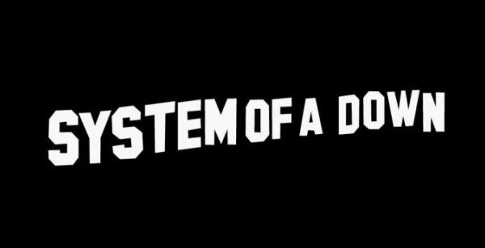

System of a Down es una banda de metal estadounidense de ascendencia armenia, formada en Glendale, California, en el año 1994. Está compuesta por Serj Tankian, Daron Malakian, Shavo Odadjian y John Dolmayan.

Genero: Metal Progresivo
Origen: Glendale, California, Estados Unidos
Premios: Premio Grammy a la Mejor Interpretación de Hard Rock, MÁS